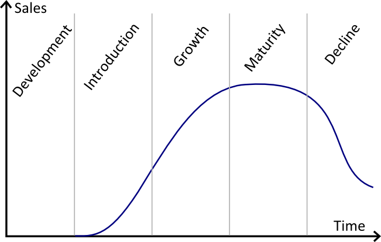
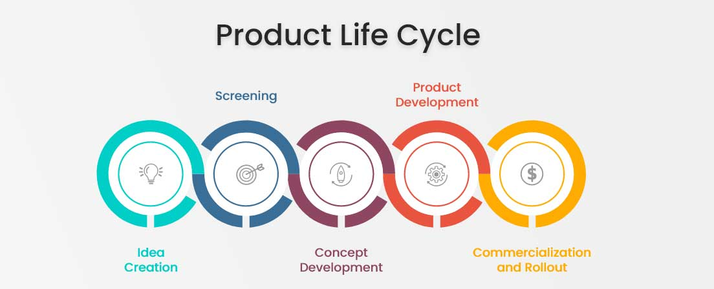

Lifecycle Stages
There are 5 stages of a product life cycle, these are important as it offers guidance for developing strategies to make the best use of those stages and promote the overall success of the product in the market place .

In case I need to link/hyperlink a website Cheese and Rice
Stage 1- Development
This is the first stage of the life cycle. This is where the prooducts and businesses journey starts. Before anything, you have to make sure your product is refined, tested and have planned a way to advertise the launch of the product. Concept testing allows you to release a conecpt of your product to be able to view the target market and be able to make changes and improve the product through feedback and reviews.
Stage 2- Introduction
When the product finally launches, you have entered thsi stage, which focusese on max advertisment of the product to create as much attention to your product and the marketing team will be making sure it reaches the target audience with max awareness.
This stage can take a long time as it can vary on what type of product you have developed, thhe competition in the market and how innovative it is. However, it is a very crucial stage as it determines whether your product is successful allowing it to move onto the next stage, or if the product wil fail.
Stage 3- Growth
This stage the product will start do bring money in and is where most sales will happen. Demand and profit will increase and competition will start to notice you and try to impede your success. This stage your brand will start to establish a prescence and a place in the market. Now you need show why customers should choose you over anyone else in the market. As the company grows you can start to experiment and add new features, relase more products and create ways to make better customer support and new distribution channels to allow for more products to sell and make things cheaper to do. This will make your company engrained into the market.
Stage 4- Maturity
When things start to settle in after rapid growth, the company needs to stay competitive to stay in the market and carry on competing, this can be done by doing things such as reducing prices. Marketing must now focus on helping sell more products instead of trying to keep gaining focus on the company as the presence is already established. In all production and distribution costs decline and sales set steady. However to keep customers returning you have to invest the money into keeping customers returning and making sure they know your the superior brand and that you will keep improving to take over the market.
Stage 5- Market Decline
If your brand starts falling off, this stage will happen, however if your brand keeps developing it will stay in the last stage. In this stage you'll face less customers, less demand and less profit. The main factors that causes this stage are:
Too much competition- If your product doesnt stand out people will move on
Outdated products/ Loss of customer interest- If your product is falling behind trends people wil, stop buying from you and customers will lose interest and move onto different brands
Brand image- If your brand has done something wrong such as refusing to go green, can make people stop buying your products as they dont want to be assocciated with unreputable brands.
Ways companies can prevent this
-Adding new versions of already existing products such as new flavours
-New packaging. Making it stand out more by adding designs or making it more sleek
-Trying new pricing strategies. Setting sales to entice buying
-Laucnhing new products. Keep upgrading to keep up with customer demands and trends

ReferencesWebsite